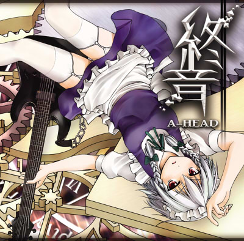
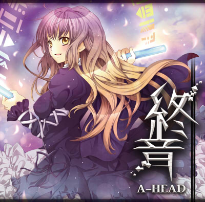

終音から垣間見えた世界は── |
||||||
|  |  | |||||
「終音」 クロスフェードデモ |
||||||
| ■INFOMATION■ コミックマーケット78 8月14日 土曜日 東 ヌ-04a 「A-HEAD」 イベント価格 500円 ショップ委託価格 735円 「籠リ謳」から1年 前作から導入した7弦ギター、5弦ベースをほぼ全ての曲で使用し、更に重圧さを増したハードロックアレンジを本作はフルボーカルで構成しました。 ■委託先■ とらのあな及びメロンブックスに委託致します。  |
■TRACK LIST■ 1.終音 Instrumental - メイドと血の懐中時計 2.名も無き世界 - メイドと血の懐中時計 3.スワローテイル - 幽雅に咲かせ、墨染の桜 ～ Border of Life 4.恋と無意識 - ラストリモート 5.厄物語 - 厄神様の通り道 ～ Dark Road 6.蓮華 - 感情の摩天楼 ～ Cosmic Mind 7.ぬくもり - 亡き王女の為のセプテット |
|||||
| ■STAFF LIST■ Music Composed All Music Arrange Guitar & Bass Play Drums Manipulate Mix Mastering Jacket Illustration Art&Logo Design Lyrics Vocal |
ZUN 秋時 秋時 ザネリ ホシナヲキ ホシナヲキ nade4co.(tr.2/3/4/6) 真朱(tr.5) 秋時(tr.7) 廃深(tr.2/6/7) あやのん(tr.3/4) 或架(tr.5) |
■会場購入特典■ コミックマーケット78会場で購入して頂いた方に、先着でジャケットイラストが描かれたピックストラップを特典として配布致します。 枚数をさほど用意できませんでしたので、お1人様1枚とさせて頂きます。 無くなり次第終了となりますので、予めご了承下さいませ。
|
||||
| ■LINK■ 本作の紹介リンクを貼って下さる方は以下のバナーをお使い下さい。 大バナー1（http://a-head.cc/images/c78_a500.jpg） 大バナー2（http://a-head.cc/images/c78_b500.jpg） 大バナー3（http://a-head.cc/images/c78_c500.jpg） 小バナー1（http://a-head.cc/images/c78_a200.jpg） 小バナー2（http://a-head.cc/images/c78_b200.jpg） 小バナー（http://a-head.cc/images/c78_c200.jpg） |
||||||